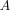

finite product of maximal ideals as zero product and noetherian / artinian ring
1. Proposition
 be a
be a 2. Proof
consider the short exact sequence
using artinian modules satisfy short exact 2 out of 3 (resp. noetherian modules satisfy short exact 2 out of 3), TFAE:
- is artinian (noetherian)
- is artinian (noetherian)
Using submodule of an artinian module as artinian module (resp. submodule of a noetherian module as noetherian module) we conclude that is artinian (noetherian). Furthermore is an -vector space (cf.
hence by restrction of scalars for a ring surjection preserves artinian modules ( restriction of scalars for a ring surjection preserves noetherian modules) as an -module is artian (noetherian) if and only if it artinian (noetherian) as an $ vector space. By finite dimensional vector space and artinian module and finite dimensional vector space and noetherian module resp. quotient module of an artinian module as artinian module (quotient of a noetherian module as noetherian module) we conclude that
As the zero module on the left is trivially artinian (noetherian) and the module on the right is finite dimension, we conclude that
both outer terms are artinian (noetherian), hence
finite dimensional vector space and noetherian module finite dimensional vector space and artinian module